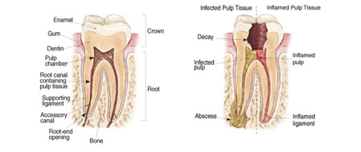

WHAT EXACTLY IS A ROOT CANAL?
A root canal is a dental procedure that is used to remove diseased pulp tissue from the
interior of a tooth. The narrow channels beneath the pulp chamber in the inner part of
the tooth are hollowed out and cleaned, and the roots are filed with flexible nickel
titanium files.
A tooth is made up of three main components: a hard protective shell referred to as enamel, a softer and sensitive middle layer referred to as dentin and a soft tissue inner layer referred to as dental pulp. Dental pulp is composed of nerve tissue, lymph tissue and blood vessels, and is considered to be the vital part of a tooth.
If dental pulp is sufficiently traumatized - whether by exposure to oral bacteria via deep dental caries, a fracture in the tooth that enters the pulp or a forceful blow to the face - the tooth begins to die and root canal therapy is often required in order to prevent or eliminate infection and prevent tooth loss.

ROOT CANAL PROCEDURES
A root canal procedure involves tooth disinfection and the removal of all debris (nerve
tissue, lymph tissue, blood tissue, bacteria and infection) from the coronal pulp chamber
and its associated canals. Once an affected tooth's canals are sufficiently cleansed and
shaped, they are filled with filling materials designed to prevent pain and infection from
recurring.
ROOT CANAL SIGNS
Certain signs may indicate that you have a diseased tooth or infected nerve and
therefore may need a root canal. These signs include: Minimal to severe pain; Tooth
discoloration; Swelling and irritation in the surrounding gum tissue; Signs of infection
visible on a radiograph. A root canal is typically recommended in such situations to save
the affected tooth and preserve its functionality.
WHY ARE THE ASSOCIATED TOOTHACHES SO PAINFUL?
Nerve fibers, blood, and lymph tissues are housed in the root canals. Located inside
each tooth is a pulp chamber that funnels into those root canals. A tooth can become
inflamed or infected for several reasons, including severe tooth decay or a crack or chip in the tooth.
Failing restorations such as dental fillings and dental crowns can foster bacterial leakage into the dental pulp. Once infected, the dental pulp begins to die and the body's inflammatory responses set in. The combination of infection and inflammation can cause significant pain. The end result is a toothache.
In cases where tooth extraction is the only solution, the missing tooth may be replaced with a dental implant or dental bridge to maintain functionality. By replacing the missing tooth, a proper bite is maintained and the surrounding teeth are prevented from shifting. Because a severe infection can be very dangerous, it is important to receive a professional evaluation. If an infection spreads beyond the jaw to the head and neck. then more extensive medical treatment, including hospitalization, may be required.